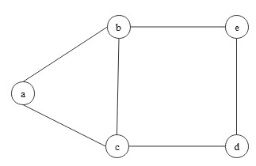

Graph theory is a core area of discrete mathematics that focuses on the study of graphs — mathematical "structures" made up of vertices and edges that connect them. Theoretically, it provides rigorous frameworks to understand properties like connectivity, cycles, and network flows, offering deep insights into the underlying structure of complex systems. On the practical side, graph theory helps model relationships in social networks, improve recommendation systems, and it is also used in advanced techniques like graph-based machine learning models.
A graph is a mathematical structure used to model relationships between objects. It consists of a set of vertices (or nodes) and a set of edges (or connections) between them. Formally, a graph is defined as: \[ G = (V, E) \] where \(V\) is a set of vertices, denoted as \(G(V)\), and \(E\) is a set of edges, denoted as \(G(E)\). In most cases, we assume graphs are finite, but they can be infinite.
Typically, \(|G|\) denotes the number of vertices on the graph \(G\), which is the cardinality of the vertex set \(V(G)\), and also we call it the order of \(G\): \[ \text{the order of the graph \(G\) } = |G| = |V(G)|. \] Similarly, \(|E(G)|\) denotes the cardinality of the edge set \(E(G)\).
A vertex \(v\) is incident with an edge \(e\) if \(v \in e\), then \(e\) is an edge at \(v\). The two vertices incident with an edge are its ends, and an edge joints its ends. Usually, an edge \(\{x, y\} \in E(G) \) is denoted by \(xy \in E(G)\) where \(x, y \in V(G)\).
Graphs come in different types, depending on how edges are defined:
- Undirected graph:
Each edge has no direction, and simply connects two vertices. Formally, edges are unordered pairs of distinct vertices: \[ E \subseteq \binom{V}{2}. \]- Directed graph:
Each edge has a direction, and points from one vertex to another. Formally, edges are ordered pairs: \[ E \subseteq V \times V. \]- Weighted graph:
It assigns a numerical value (or "weight") to each edge, often representing cost, distance, or strength of the connection. Weighted graphs are widely used in shortest path algorithms and network optimization problems. It is represented as: \[ G = (V, E, w) \] where \(w: E \to \mathbb{R}\) is a function assigning a weight to each edge.
- Multigraph:
It allows multiple edges between the same pair of vertices. It is represented as: \[ G = (V, E, \mu) \] where \(mu: E \to \mathbb{N}\) is a function that assigns a multiplicity to each edge, representing how many times the edge appears between two vertices.
Two vertices \(x, y \in V(G)\) are adjacent or neighbors if \(xy \in E(G)\). If every vertex of \(G\) are pairwise adjacent, the the graph \(G\) said to be complete graph. For example, a complete graph on 3 vertices is indeed, a triangle, denoted as \(K_3\).
Note: The set of neighbors of a vertex \(x\) is the set of vertices \(y\) such that \(xy \in E(G)\). Typically, it is written as \(N_G (x)\) (or simply \(N(x)\)).
Similarly, two edges \(e \neq f\) are adjacent if they have a commom end. Also, a set of vertices(or edges) is independent if no two of its elements are adjacent.
For any subset \(A \subseteq V(G)\), we define \(e(A)\) as the number of edges with "both endpoints" in \(A\). More generally, given two subsets \(A, B \subseteq V(G)\) we define: \[ e(A, B) = | \{ (a, b) \in A \times B: ab \in E(G)\} |. \] This represents the number of edges between the sets \(A\) and \(B\). If \(A\) and \(B\) are disjoint, then \(e(A, B)\) counts only edges that connect vertices in \(A\) to vertices in \(B\).
The degree of a "vertex" \(x\) is defined as the number of neighbors of \(x\) and is denoted as \(\text{deg }_G (x) = | N_G(x) |\)(or \(\text{deg }(x)\)). Moreover, for directed graphs, we define the in-degree \(\text{deg }^-(x)\), the number of edges directed into \(x\) and the out-degree \(\text{deg }^+ (x)\), the number of edges directed out of \(x\).
The minimum degree and maximum degree of \(G\) is written as follows respectively: \[ \delta(G) = \min \{\text{deg }(x) | x \in V\} \] \[ \Delta(G) = \max \{\text{deg }(x) | x \in V\} \] and the average degree of a "graph" \(G\) is written as \(d(G)\), which always holds: \[ \delta(G) \leq d(G) \leq \Delta(G). \] In addition, if every vertex of a graph have the same degree \(k\), the graph said to be \(k\)-regular.
Let \(\epsilon(G) = \frac{|E|}{|V|}\). This is the number of edges per vertex on \(G\). This ratio is related with the average degree of \(G\) as follows: \[ |E| = \frac{1}{2} \sum_{x \in V} \text{deg }(x) = \frac{1}{2} d(G) |V| \] and thus \[ \frac{1}{2}d(G) = \epsilon(G) = \frac{|E|}{|V|}. \] (Try: If we count every edge of \(G\) twice, it is equals to the sum of all vertex degrees in \(G\).)
The two graphs \(G = (V, E)\) and \(G' = (V', E')\) said to be isomorphic, \(G \simeq G'\), if there exists a bijection: \[ \varphi: V \to V' , \quad xy \in E \iff \forall x, y \in v, \quad \varphi(x)\varphi(y) \in E' \] Such a map \(\varphi\) is called an isomorphism. If \(G = G'\), it is called automorphism.
A class of graphs that is closed under isomorphism is called a graph property. For example, containing a triangle(more formally, having a cycle of length 3) is a graph property. So, if a graph \(G\) contains a triangle, then any graph isomorphic to \(G\) must also contain a triangle.
If a map \(\varphi(G)\) assigns equal values to isomorphic graphs, the map is said to be a graph invariant. For example, the number of vertices(or edges) remains unchanged under isomorphism.
Consider the two graphs \(G = (V, E)\) and \(G' = (V', E')\).
We can apply set operations to graphs. For example, \[ G \cup G' = (V \cup V', E \cup E'), \quad G \cap G' = (V \cap V', E \cap E'). \] If \(G \cap G' = \emptyset\), then they are disjoint.
A graph \(G = (V, E)\) is called bipartite if its vertices can be divided into two disjoint sets \(U\) and \(W\) such that \[ V = U \cup W, \quad U \cap W = \emptyset. \quad E \subseteq U \times W. \] This means no edge exists between two vertices in the same subset. This structure is useful for example, in matching theory such as job assignments.
When we "delete" a vertex \(v\) from \(V(G)\), all edges incident to the vertex must be removed from \(E(G)\). We simply write \(G - v\) instead of \(G - \{v\}\).
If \(V' \subseteq V\) and \(E' \subseteq E\), then \(G'\) is subgraph of \(G\) and \(G\) is supergraph of \(G'\), denoted as \(G' \subseteq G\).
If \(G' \subseteq G\) and \(G'\) contains all edges \(xy \in E\) such that \(x, y \in V'\), then \(G'\) is called an induced subgraph of \(G\). We say that \(V'\) induces or spans \(G'\) in \(G\), and write \[ G' = G[V'] = (V', \{xy \in E | x, y \in V'\}). \] This means that if \(U \subseteq V\) is any set of vertices, then \(G[U]\) denotes the graph on \(U\) whose edges are the edges of \(G\) with both ends belong to \(U\).
If \(V'\) spans all of \(G\), or \(V' = V\), the subgraph \(G'\) is said to be spanning subgraph of \(G\).
A graph \(G\) is said to be edge-maximal with a given graph property if \(G\) has the property but no graph \(G + xy\) for non-adjacent vertices \(x, y \in G\).
A path is a non-empty graph \(P = (V, E)\) of the form: \[ V = \{x_0, x_1, x_2, \cdots\, x_{k-1} x_k\}, \quad E = \{x_0 x_1, x_1 x_2, \cdots, x_{k-1}x_k\}. \] Note: Each vertex \(x_i\) is distinct. The ends \(x_0\) and \(x_k\) are linked by \(P\) and the other vertices are called the inner vertices of \(P\).Back to Home
Typically, \(P_k\) refers to a \(k-1\)-edge path. So, \(k\) is the number of vertices of \(P\), not the length, which is the number of edges of \(P\). For example, a path \(P_4\) has 4 vertices and 3 edges.
For \(k \geq 3\), if \(P = x_0 \cdots x_{k-1}\) is a path, then the graph \(C_k = P + x_{k-1}x_0\) is called a \(k\)-cycle. For example, a cycle \(P = abcda\) is denoted as \(C_4\), which has 4 vertices and 4 edges.
A graph does not have cyclrs is called the acyclic graph. For example, tree is the one of the most famous acyclic graphs in many real applications. A tree \(T = (V, E)\) is connected and acyclic. It has exactly one path between any two vertices. So, the tree always has \(|V|\) vertices and \(|V| - 1\) edges. We will discuss this important structure more in the future.Cycle & Induced Subgraph Consider the following graph:Its vertex set and edge set are as follows: \[ V = \{a, b, c, d, e\}, \quad E = \{ab, ac, bc, be, cd, de\} \] If we delete the vertex \(a\), and remove all edges incident to the vertex \(a\), we obtain a subgraph \(G' =(V', E')\) such that \[ V' = \{b, c, d, e\}, \quad E'= \{bc, be, cd, de\}. \] So, we can say that the graph \(G\) contains the 4-cycle as its induced subgraph.
On the other hand, we can see the 5-cycle in \(G\). (Say, \(a \to c \to d \to e \to b \to a\).) This is also a subgraph of \(G\) but NOT an induced subgraph. Let this subgraph be \(G'' =(V'', E'')\) such that \[ V'' = \{a, b, c, d, e\}, \quad E'' = \{ab, ac, be, cd, de\}. \] In this case, we just removed an edge \(bc\) from \(G\). This does not meet the definition of the induced subgraph.